전파전자통신기사 (2015-03-07 기출문제)
1과목: 디지털전자회로
1. 다음 그림은 정류회로의 입력파형과 출력파형을 나타내었다. 주어진 입출력 특성을 만족시키는 정류회로는? (단, 다이오드의 문턱전압은 0.7[V]이고, 변압기의 권선비는 1:1이라 가정한다.
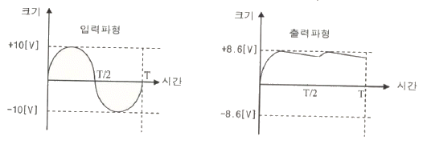
- 반파정류회로
- 유도성 중간탭 전파정류회로
- 2배압 정류회로
- 용량성 필터를 갖는 브리지 전파정류회로
(정답률: 69%)

2. 정류회로 출력 성분 중 교류인 리플을 제거하기 위해 정류회로 다음 단에 접속되는 회로는 무엇인가?
- 평활회로
- 클램핑회로
- 정전압회로
- 클리핑회로
(정답률: 38%)
3. 주어진 그림은 N-채널 FET 소자의 직류전달특성을 나타내었다. 이 소자의 트랜스컨덕턴스는?
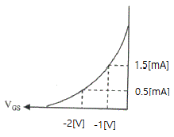
- 1.0[mS]
- 2.0[mS]
- 10[mS]
- 20[mS]
(정답률: 59%)
4. 입력 저항이 20[kΩ]인 증폭기에 직렬 전류 궤환회로를 적용할 경우 입력 저항값은 얼마가 되는가? (단, βA=9이다.)
- 0.1[MΩ]
- 0.2[MΩ]
- 0.3[MΩ]
- 0.4[MΩ]
(정답률: 64%)
5. 다음 궤환회로에 대한 설명으로 틀린 것은?
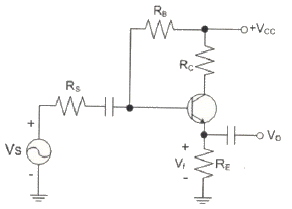
- 궤환으로 입력 임피던스는 감소한다.
- 궤환으로 전체 이득은 감소한다.
- 궤환으로 주파수 일그러짐이 감소한다.
- 궤환으로 출력 임피던스는 감소한다.
(정답률: 35%)
6. 다음 중 전력증폭기에 대한 설명으로 틀린 것은?
- 대신호 동작용으로 사용된다.
- 증폭기의 선형동작에 의해 고조파 왜곡이 생긴다.
- 고출력 증폭을 위해 사용된다.
- 부궤환 회로를 적용하면, 저왜곡 고출력이 가능하다.
(정답률: 50%)
7. 정궤환(Positive Feedback)을 사용하는 발진회로에서 발진을 위한 궤환루프(Feedback Loop)의 조건은?
- 궤환루프의 이득은 없고, 위상천이가 180°이다.
- 궤환루프의 이득은 1보다 작고, 위상천이가 90°이다.
- 궤환루프의 이득은 1이고, 위상천이가 0°이다.
- 궤환루프의 이득은 1보다 크고, 위상천이가 180°이다.
(정답률: 69%)
8. 다음 그림과 같은 발진회로의 명칭은 무엇인가?
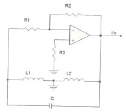
- 콜피츠발진회로
- LC발진회로
- 하틀리발진회로
- 클랩발진회로
(정답률: 67%)
9. 다음 중 정보 전송에서 반송파로 사용되는 정현파의 위상에 정보를 싣는 변조 방식은?
- PSK
- FSK
- PCM
- ASK
(정답률: 67%)
10. FM 변조에서 최대 주파수 편이가 80[kHz]일 때 주파수 변조파의 대역폭은 얼마인가?
- 40[kHz]
- 60[kHz]
- 80[kHz]
- 160[kHz]
(정답률: 75%)
11. RC 충·방전 회로에서 상승시간(Rise Time) 이란 무엇인가?
- 출력전압이 최종값의 90[%]로부터 10[%]에 이르기까지 소요되는 시간
- 스위치를 넣은 후 출력전압이 최종값의 10[%]로부터 90[%]까지 소요되는 시간
- 스위치를 넣은 후 출력전압이 최종값의 90[%]로부터 100[%]까지 소요되는 시간
- 스위치를 넣은 후 출력전압이 최종값의 10[%]에 이르는데 소요되는 시간
(정답률: 71%)
12. 다음 그림과 같은 단안정 멀티바이브레이터 회로에서 콘덴서 C2의 역할은 무엇인가?
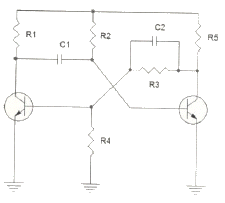
- 스위칭 속도를 빠르게 한다.
- 상태를 저장하는 메모리 기능을 한다.
- 트랜지스터의 베이스 전위를 일정하게 한다.
- 출력 파형의 진폭크기를 결정한다.
(정답률: 67%)
13. 2진법 곱셈 1010×0101의 계산값은?
- 0110010
- 1110001
- 0111001
- 0110001
(정답률: 57%)
14. 10진수 45를 2진수로 변환한 값으로 맞는 것은?
- 101100
- 101101
- 101110
- 101111
(정답률: 74%)
15. 다음 중 논리 함수
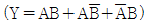
를 간소화한 것으로 옳은 것은?- A+B
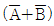
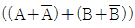
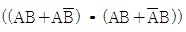
(정답률: 73%)
16. JK-Flip Flop에서 J입력과 K입력이 모두 1이고 CP=1 일 때 출력은?
- 출력은 반전이다.
- Set출력은 1, Reset출력은 0이다.
- Set출력은 0, Reset출력은 1이다.
- 출력은 1이다.
(정답률: 54%)
17. 25진 리플 카운터를 설계할 경우 최소한 몇 개의 플립플롭이 필요한가?
- 4개
- 5개
- 6개
- 7개
(정답률: 69%)
18. 다음 중 리플 카운터(Ripple Counter)에 대한 설명으로 틀린 것은?
- 비동기 카운터이다.
- 카운터 속도가 동기식 카운터에 비해 느리다.
- 최대 동작 주파수에 제한을 받지 않는다.
- 회로 구성이 간단하다.
(정답률: 64%)
19. 여러 개의 회로가 단일 회선을 공동으로 이용하여 신호를 전송하는데 필요한 장치는?
- 멀티플렉서
- 디멀티플렉서
- 인코더
- 디코더
(정답률: 67%)
20. 반가산기(Half Adder)에서 A=1, B=1일 경우 S(Sum)의 값은?
- -1
- 1
- 0
- 2
(정답률: 57%)
2과목: 무선통신기기
21. 다음 중 SSB전파를 수신할 수 있는 검파기는?
- Foster Seely
- Ratio detector
- 복동조형 검파기
- 다이오드 검파기
(정답률: 84%)
22. 다음 중 광대역 FM 신호를 발생하기 위해서 간접적인 방법을 사용할 경우 블록도의 구성요소가 아닌 것은?
- 적분기
- 협대역 위상 변조기
- 주파수체배기
- 미분기
(정답률: 75%)
23. 다음 중 수신기에서 수신 안테나와 고주파 증폭기의 임피던스 정합을 행하며 희망파를 선택하는 회로는?
- 주파수 혼합회로
- 중간 주파 증폭회로
- 입력 회로
- 고주파 증폭회로
(정답률: 20%)
24. 다음 중 아날로그 신호에 대한 설명으로 옳지 않은 것은?
- 주어진 전자기적 교류 주파수의 매체 파장에 시시각각으로 변하는 주파수나 진폭신호를 추가함으로써 수행되는 전자적 정보전송과 관련된 기술이다.
- 전류, 전압 등과 같이 연속적으로 변화하는 물리량을 이용하여 어떤 값을 표현하거나 측정하는 것을 의미하기도 한다.
- 데이터를 수신 시 수신된 아날로그 신호를 디지털 신호로 바꾸기 위해 코덱이 필요하다.
- 보통 일련의 사인(Sine)곡선으로 표현되는 경우가 많다.
(정답률: 59%)
25. 다음 중 GPS위성에서 전송하는 반송파의 개수로 알맞은 것은?
- 1개
- 2개
- 3개
- 4개
(정답률: 42%)
26. 위성방송 TV수신용 안테나와 가장 거리가 먼 것은?
- 파라볼라안테나
- 야기(Yagi)안테나
- 패치 어레이(Patch array)안테나
- 오프 세트(Off set)안테나
(정답률: 89%)
27. 현재 사용 가능한 Inmasat 위성통신시스템 중 텔렉스를 이용하여 조난 및 안전 통신을 할 수 있는 것은?
- Inmasat-A
- Inmasat-C
- Inmasat-M
- Inmasat-E
(정답률: 78%)
28. 다중화에 대한 설명으로 바르지 못한 것은?
- 전송설비 등을 더욱 효율적으로 이용하기 위해 사용되는 기법을 말한다.
- 공통 채널상에서 동일 방향으로 신호를 전송하기 위해 각 채널의 신호를 결합시키는 과정을 말한다.
- 여러 사용자와 노드가 경쟁적으로 주파수만을 공유한다.
- 계층적 관점에서 하위 계층의 신호를 모아 상위 계층의 신호로 만들어가는 과정을 말한다.
(정답률: 89%)
29. 다음 CDMA 채널 중 순방향 채널에 속하지 않는 것은?
- 접속 채널(Access Channel)
- 파일럿 채널(Pilot Channel)
- 동기 채널(Sync Channel)
- 페이징 채널(paging Channel)
(정답률: 74%)
30. 다음 중 GMDSS 설비로 406[MHz] 주파수를 사용하는 것은?
- VHF DSC
- NAVTEX
- Inmarsat-C
- COSPAS-SARSAT EPIRB
(정답률: 78%)
31. 다음 중 HF DSC를 이용한 조난경보 수신 메시지 구성에 대한 설명으로 틀린 것은?
- J3E : 무선전화로 통화를 원한다.
- 12,290.0[kHz] : 무선전화 조난주파수로 통화를 원한다.
- Fire : 선박에 화재가 나있다.
- A3E : 무선 텔렉스로 통신하기를 원한다.
(정답률: 71%)
32. 다음 중 조난통신을 관장하는 것에 대한 설명으로 맞는 것은?
- 조난경보를 발신한 무선국
- 조난경보를 수신한 선박국
- 조난통보를 수신한 해안국
- 조난통보를 수신한 지구국
(정답률: 50%)
33. 전원회로를 대한 설명으로 옳지 않은 것은?
- UPS는 시스템에 안정된 전원을 공급하는 장치
- 정전압회로는 일정한 크기의 전압을 공급하는 회로
- 인버터는 교류전압을 직류전압으로 변환하는 장치
- 축전지의 용량은 AH로 표기
(정답률: 83%)
34. 무정전 전원장치(UPS)이 일반적인 시스템 구성 회로가 아닌 것은?
- 컨버터
- 인버터
- AC, DC 필터
- 임펄스 정형회로
(정답률: 74%)
35. 다음 중 인버터에 요구되는 기능으로 올바르지 않은 것은?
- 직류분 제어기능
- 고효율 제어
- 저조파 억제
- 고주파 억제
(정답률: 53%)
36. 수정편의 등가 인덕턴스가 3[H], 등가 커패시턴스가 0.02[pF], 등가저항이 100[Ω]이고 전극판의 정전용량이 5[pF]인 수정 진동자가 있을 때, 수정편의 Q는 약 얼마인가?
- 1.225×103
- 1.225×105
- 2.450×103
- 2.450×105
(정답률: 77%)
37. 다음 중 신호대 잡음비에 대한 설명으로 올바르지 않은 것은?
- Signal Noise Ratio의 약자이다.
- S/N비 = 20log(S/N) (S: 평균 신호 전력, N: 평균 잡음 전력)이다.
- 통상적으로 아날로그 통신시스템에서의 성능평가 척도로 우수하다.
- 양호한 SNR 수준은 음성 40[dB] 이상, 영상 45[dB] 이상이다.
(정답률: 77%)
38. 안테나 성능 측정 시 원역장(Far Field) 조건을 만족하는 계산식은? (단, D: 피측정 안테나 최대 직경, λ: 파장)
- 측정거리 = D2/λ
- 측정거리 = 2D2/λ
- 측정거리 = 3D2/λ
- 측정거리 = 4D2/λ
(정답률: 88%)
39. 급전선의 임피던스가 75[Ω]인 안테나에 특성 임피던스 50[Ω]인 급전선을 연결 시 반사계수가 얼마인가?
- 0.1
- 0.2
- 0.3
- 0.4
(정답률: 84%)
40. 60[AH] 용량의 축전지를 10시간 방전 시 최대 몇 [A]로 사용할 수 있는가?
- 2[A]
- 6[A]
- 10[A]
- 20[A]
(정답률: 83%)
3과목: 안테나공학
41. 두 개의 평행 도체판 사이에는 전계의 시간적인 변화에 의해 변위 전류가 흐르게 되며 변위 전류 주위에는 무슨 법칙에 의하여 자계가 발생되는가?
- Lentz 법칙
- Amere 오른나사 법칙
- Faraday 법칙
- Gauss 법칙
(정답률: 87%)
42. 전자파의 전파속도는 매질의 어떤 특성에 따라서 변동하는가?
- 유전율과 도전율
- 유전율과 투자율
- 도전율과 투자율
- 도전율과 저항률
(정답률: 70%)
43. 안테나의 편팡 대한 설명으로 잘못된 것은?
- 안테나의 편파는 송신 안테나에서 주어진 방향으로 복사되어 나가는 파의 편파이다.
- 전파의 전기력선의 방향에 따라 수평 편파와 수직 편파로 분류한다.
- 전기력선의 진동방향과 크기 변화에 따라 직선 편파, 원형 편파, 타원 편파로 분류한다.
- 원형 편파의 축비는 0이다.
(정답률: 81%)
44. 잠수함과 같이 수중에 있는 물체가 통신하기 위해 가장 적합한 주파수대는?
- SHF
- VHF
- MF
- VLF
(정답률: 67%)
45. 부정합이 있는 전송선로에서 정재파의 파복의 크기가 45[V], 파절의 크기가 9[V]이면 정재파의 값은 얼마인가?
- 0.2
- 5
- 9
- 45
(정답률: 78%)
46. 스미스 도표(Smith Chart)의 개념으로 옳은 것은?
- 반사계수와 임피던스의 관계를 도시한 것이다.
- 투과계수와 임피던스의 관계를 도시한 것이다.
- 반사계수와 투과계수의 관계를 도시한 것이다.
- 정재파비와 정재파비의 관계를 도시한 것이다.
(정답률: 82%)
47. 공액임피던스 정합에 대한 설명으로 틀린 것은?
- 부하 임피던스의 리액턴스가 전원 임피던스의 리액턴스와 크기가 같고 위상이 90°차가 있어야 한다.
- 부하 임피던스에서 반사계수가 0이 될 수도 있다.
- 부하 임피던스와 전원의 내부 임피던스의 저항 성분이 서로 같아야 한다.
- 최대 전력이 부하에 공급되기 위한 조건이다.
(정답률: 42%)
48. 전류급전을 하려고 한다. 주파수가 30[MHz]일 때 병렬공진 시 급전선의 길이로 가장 적절한 것은?
- 2.5[m]
- 5[m]
- 7.0[m]
- 10[m]
(정답률: 34%)
49. 안테나 길이 20[m], 사용 파장이 200[m]로서 λ/4보다 짧은 수직 접지형 안테나의 복사저항은 약 얼마인가?
- 2[Ω]
- 8[Ω]
- 20[Ω]
- 40[Ω]
(정답률: 54%)
50. 접지 안테나의 복사이론에 대한 설명으로 옳은 것은?
- 접지 안테나로부터 원거리의 한 점의 전계는 직접파와 전리층 반사파에 의한 것이다.
- 대지가 완전도체일 경우에도 접지 안테나는 반파장 안테나와 같은 역할을 할 수 없다.
- 접지 안테나에 고주파 전류를 공급하면 진행파가 발생한다.
- 대지를 기준으로 한 λ/4 안테나의 전류는 i(z)=I0cosβz[A]이다.
(정답률: 45%)
51. 루프 안테나의 특징으로 틀린 것은?
- 방향탐지기에 이용된다.
- 야간오차에 발생한다.
- 수직면내 지향 특성은 8자형이다.
- 소형으로 이동이 용이하다.
(정답률: 65%)
52. 안테나의 실효인덕턴스를 Le, 실효정전용량을 Ce, 실효저항을 Re라고 하면 안테나 Q의 식으로 틀린 것은?
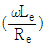
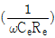
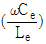
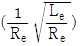
(정답률: 78%)
53. V자형 다이폴 안테나의 개념을 확장시켜 반사전력을 적게 하고 리액턴스 성분이 거의 없는 입력 임피던스를 갖도록 만든 안테나는?
- 헬리켈 안테나
- 폴디드 다이폴 안테나
- 롬빅 안테나
- 슬리브 안테나
(정답률: 74%)
54. 다음 중 주파수 특성이나 지향성에서 나머지 안테나와 다른 특성을 보이는 안테나는?
- 롬빅 안테나
- 웨이브 안테나
- 빔 안테나
- 파라볼라 안테나
(정답률: 59%)
55. 직접파의 가시거리에 대한 설명 중 옳지 않은 것은?
- 기하학적 가시거리와 전파 가시거리는 다르다.
- 직접파에 의한 전파는 가시거리에 못 미쳐서 도달한다.
- 전파 가시거리는 등가 지구반경계수를 이용하여 구한다.
- 등가 지구반경계수는 지역에 따라 약간씩 다를 수 있다.
(정답률: 56%)
56. 프레즈넬(Fresnel) 타원체에 관한 설명 중 옳지 않은 것은?
- 구면 회절손실을 일으키는 영역의 해석에 관련된 것이다.
- 직접파와 회절파가 간섭을 발생시키는 영역이다.
- VHF대 이상에서 전파의 직전통로와 곡선통로의 차이가 λ/2의 정수 배인 점들의 궤적이다.
- 전파통로상의 장애물이 적어도 제1 프레즈넬 영역(Fresnel Zone)을 가리지 않는 것이 통신에 유리하다.
(정답률: 28%)
57. 대류권 전파에서 “라디오 덕트”가 발생하는 원인이 아닌 것은?
- 야간 냉각에 의한 덕트
- 이류성 덕트
- 상승기류가 생기는 현상에 의한 덕트
- 점성에 의한 덕트
(정답률: 79%)
58. 대기층의 동요, 강풍에 의한 기단의 변화, 강한 주 전파에 대한 약한 굴절파의 간섭에 의하여 발생하는 현상은?
- 산란형 페이딩
- 신틸레이션 페이딩
- 감쇠형 페이딩
- 덕트형 페이딩
(정답률: 62%)
59. 육상이동통신을 위한 전파전파환경에서 가장 문제가 되는 페이딩은?
- 신틸레이션 페이딩
- 다중경로 페이딩
- 산란형 페이딩
- 감쇠형 페이딩
(정답률: 50%)
60. 이동통신 환경에서 발생하는 짤은 주기의 페이딩(Short-Term fading)에 관한 설명으로 옳은 것은?
- 수신신호를 저역필터(LPF)를 통과시키면 얻을 수 있다.
- Knife-Edge 회절에 의하여 발생한다.
- Rayleigh 분포함수를 보이며 주로 건물 등에서 일어나는 다중 반사가 원인이다.
- Lognormal 분포함수로 나타난다.
(정답률: 71%)
4과목: 통신영어 및 교통지리
61. Choose the one which is not inclued to the purposes of ITU.
- To maintain and extend international cooperation among all its Member States for the improvent and rational use of telecommunications of all kinds.
- To romote and to offer technical assistance to developing countries in the field of telecommunications.
- To act as governing body of the Union, on behalf of the Plenipotentiary Conference within the limits of the powers delegated to it by the latter in the interval between Plenipotentiary Conferences.
- To promote the develoment of technical facilities and their most efficient operation with a view to improving the efficiency of telecommunication services.
(정답률: 89%)
62. Choose the best definition of certain terms which would be appropriate in the following sentence.
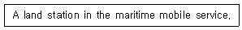
- Coast Station
- Aircraft Station
- Ship Station
- Base Station
(정답률: 57%)
63. Which language shall prevail in case of any discrepancy or dispute among various language versions of the Constitution?
- English
- French
- Spanish
- Arabic
(정답률: 85%)
64. cplease put the right words in the blank.
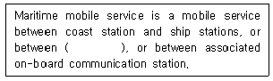
- Aircraft Stations
- Land Mobile Stations
- Coast Stations
- Ship Stations
(정답률: 40%)
65. Choose the right one for the blank.
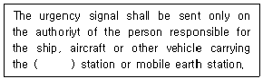
- land
- portable
- fixed
- mobile
(정답률: 53%)
66. Choose the most suitable word to fill the blank.
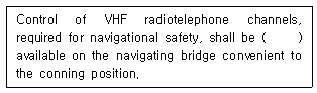
- slowly
- greatly
- immediately
- kindly
(정답률: 65%)
67. Choose the correct one in the blank.
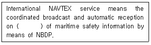
- 512[kHz]
- 518[kHz]
- 2,182[kHz]
- 156.525[MHz]
(정답률: 82%)
68. 다음 문장은 무엇을 설명하고 있는가?
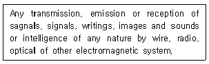
- Radiocommunication
- Telecommunication
- Telegraphy
- Telephony
(정답률: 74%)
69. 다음 중에서 전송할 문자의 발음이 정확하지 않은 것은?
- T : TANG GO
- G : GOLF
- A : AL FAH
- Z : ZOO NEE
(정답률: 89%)
70. Select the most suitable Korean language fir the underlined vocabulary.
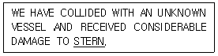
- 선수
- 선미
- 선교
- 선창
(정답률: 87%)
71. What do we call the following phrase in Korean?
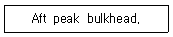
- 선수격벽
- 선미격벽
- 좌현격벽
- 우현격벽
(정답률: 83%)
72. Choose the same meaning to the underlined part of the following sentence.
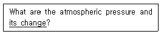
- 기압변화량
- 기온변화량
- 공기변화율
- 침로변경
(정답률: 75%)
73. 우리나라에서 운용하고 있는 NAVTEX 해안국은 어디에 있는가?
- 인천/동해
- 죽변/변산
- 목포/강릉
- 군산/동해
(정답률: 89%)
74. 우리나라 최초의 등대이며, 해상 무선국 지국의 표지부호가 PM인 것은?
- 어청도
- 죽도
- 팔미도
- 거문도
(정답률: 80%)
75. 다음 중 말레이시아, 싱가포르, 인도네시아를 끼고 있는 해협은?
- 베링 해협
- 호르무즈 해협
- 말라카 해협
- 도버 해협
(정답률: 77%)
76. 다음의 해안국 중 Red Sea에 위치하지 않은 도시는?
- Jeddah
- Kosseir
- Assab
- Alexandria
(정답률: 77%)
77. 다음 중 Inmarsat 해안지구국명이 아닌 것은?
- FUCINO
- ANTWERP
- EIK
- AUSSAGUEL
(정답률: 69%)
78. 다음 중 AMVER 통신에 관한 설명으로 옳지 않은 것은?
- 항해하는 선박의 안전 및 경제적 운항을 위해 항로를 추천하는 제도이다.
- 해상 사고 미연방지와 조난 시 위치추적을 한다.
- 미국 해안경비대(USCG)에 의해 무료로 운용된다.
- 수색과 구조(Search and Rescue)업무를 행한다.
(정답률: 67%)
79. 다음 중 열대성 저기압의 이름과 발생지에 관한 설명으로 옳지 않은 것은?
- Typhoon은 태평양 서부적도 북부에서 발생한다.
- Hurricane은 서인도제도 부근에서 발생한다.
- Cyclone은 마다가스카르섬 부근 및 인도양에서 발생한다.
- Willy, Willy는 멕시코만에서 발생한다.
(정답률: 85%)
80. 온난한 기단이 한랭한 기단 위로 올라가서 생기는 전선으로 이 전선 부근에는 비가 오는 지역이 넓다. 이러한 기상 전선은?(오류 신고가 접수된 문제입니다. 반드시 정답과 해설을 확인하시기 바랍니다.)
- Warm Front
- Cold Front
- Stationary Front
- Occluded Front
(정답률: 11%)
5과목: 전파관계법규
81. 전파의 전파특성을 이용하여 위치, 속도 및 기타 사물의 특징에 관한 정보를 취득하는 것은?
- 무선측위
- 방향탐지
- 레이더 탐색
- 데이터 전송
(정답률: 57%)
82. 다음 중 전파법령에 의한 방송업무에 포함되지 않는 것은?
- 지상파방송업무
- 위성방송업무
- 지상파방송보조업무
- 종합유선방송업무
(정답률: 53%)
83. 다음 중 육상의 특정 지점에 개설하여 해상이동위성업무를 하는 지구국은?
- 일반지구국
- 기지지구국
- 해안지구국
- 육상이동지구국
(정답률: 53%)
84. 의료용 전파응용설비는 얼마를 초과하는 고주파출력을 사용하는 경우에 허가를 요하는가?
- 20와트
- 30와트
- 40와트
- 50와트
(정답률: 44%)
85. 다음 중 대한민국 국적을 가지지 아니한 자라도 개설할 수 있는 무선국은?
- 고정국
- 실험국
- 비상국
- 무선표지국
(정답률: 89%)
86. 총톤수 40톤 미만인 어선(의무선박국)의 정기검사 유효기간은 몇 년인가?
- 1년
- 2년
- 3년
- 5년
(정답률: 65%)
87. 무선국의 운용 등에 관한 규정 중 조난통신·긴급통신에 관한 사항으로서 적합하지 않은 것은?
- 선박국이 조난호출 또는 긴급호출을 하고자 하는 때에는 그 선박의 책임자의 명령에 따라야 한다.
- 해안국 및 선박국은 긴급수호를 수신한 때에는 조난통신을 행하는 경우 외에는 최소한 1분 이상 계속하여 이를 수신하여야 한다.
- 비상위치지시용 무선표지국에서 송신하는 통보는 조난통신으로 본다.
- 조난선박국과 조난통신을 관장하는 무선국은 조난통신을 방해하거나 방해할 우려가 있는 모든 통신의 정지를 요구할 수 있다.
(정답률: 88%)
88. 다음 중 해상이동업무에 있어서 통신의 우선 순위가 가장 높은 것은?
- 업무통신
- 안전통신
- 긴급통신
- 조난통신
(정답률: 88%)
89. 비상위치지시용 무선표지설비의 공중선 전력의 허용편차는?
- 상한 5[%], 하한 10[%]
- 상한 10[%], 하한 20[%]
- 상한 5[%], 하한 5[%]
- 상한 50[%], 하한 20[%]
(정답률: 60%)
90. 해안국 SSB 무선전화 송신설비의 주파수허용편차는 몇 [Hz]인가?
- 10[Hz]
- 20[Hz]
- 30[Hz]
- 40[Hz]
(정답률: 77%)
91. 전파형식별 공중선 전력의 표시방법에 포함되지 않는 것은?
- 평균전력
- 최대복사전력
- 첨두포락선전력
- 반송파전력
(정답률: 60%)
92. 다음 중 ITU의 조직 및 기능에 관한 설명으로 잘못된 것은?
- 전권위원회의 회원국의 대표단으로 구성되며 매 4년마다 개최한다.
- 이사회는 전권위원회의에서 선출된 회원국으로 구성된다.
- 전파규칙은 전파관리위원회(RRB)에서 개정한다.
- 사무총장은 ITU활동의 행정적 및 재정적 사항 전반에 관하여 이사회에 대하여 책임을 진다.
(정답률: 59%)
93. 국제전기통신연합의 전권위원회가 개최되는 근거 규정은?
- 이사국의 요구
- 국제전기통신엽합 원장
- 사무총장의 요구
- 전파규칙위원회 위원 사임 시
(정답률: 56%)
94. 현행 전파법 중 무선 설비 기준의 근거가 되는 국제 규정은?
- SOLAS : 해상 인명 안전 조약
- ICAO : 국제 민간 항공 기구
- ITR : 전기 통신 규칙
- RR : 전파규칙
(정답률: 88%)
95. 다음 중 세계해상조난 및 안전제도에 의한 선박이 갖추어야 할 무선설비가 아닌 것은?
- VHF DSC
- MF/HF DSC
- 수색 구조용 레이더 트랜스폰더
- 레이더
(정답률: 65%)
96. 통신내용 및 정보자료를 비닉할 목적으로 사용하는 문자·숫자·기호 등으로 구성된 환자표 또는 암호논리 등을 저장한 문서나 도구로 Ⅲ급 비밀 이하에 적용이 가능한 보안자재는?
- 약호자재
- 암호자재
- 암호장비
- 음어자재
(정답률: 62%)
97. 다음 중 보안책임자가 수행하여야 하는 사항에 속하지 않는 것은?
- 불필요한 내용의 무선통신 억제
- 무선국 운용자에 대한 보안 교육
- 통신보안에 관한 관계규정 숙지 및 이행
- 무선국 운용에 따른 통신보안업무 활동계획 수립·시행
(정답률: 83%)
98. 다음 중 감청에 대한 설명으로 알맞은 것은?
- 통신운용상태를 도청하기 위해 공개적으로 엿듣는 것
- 통신보안의 위반 여부를 감독하기 위해 공개적으로 엿듣는 것
- 통신 내용을 탐지하기 위해 비공개적으로 엿듣는 것
- 통신 제원의 위반사용 여부를 감독하기 위해 비공개적으로 엿듣는 것
(정답률: 90%)
99. 통신보안 사항 준수 의무를 2차 위반한 무선국 시설자에 대한 행정 처분 기준은?
- 운용정지 3개월
- 운용정지 5개월
- 운용정지 6개월
- 허가 취소
(정답률: 73%)
100. 무선국 시설자(전기통신역무를 제공받기 위하여 개설한 무선국의 시설자 제외)가 통신보안 사고가 발생하지 아니하도록 준수하여야 하는 사항의 설명으로 옳지 않은 것은?
- 무선종사자에 대한 통신보안 교육 이수
- 비밀 및 대외비 내용의 통신 시 보안자재 사용 및 비인가 보안 자재 사용 금지
- 필요 이상의 무선통신 사용 촉구
- 통신장비 설치장소의 보호구역 설정 및 출입통제
(정답률: 71%)